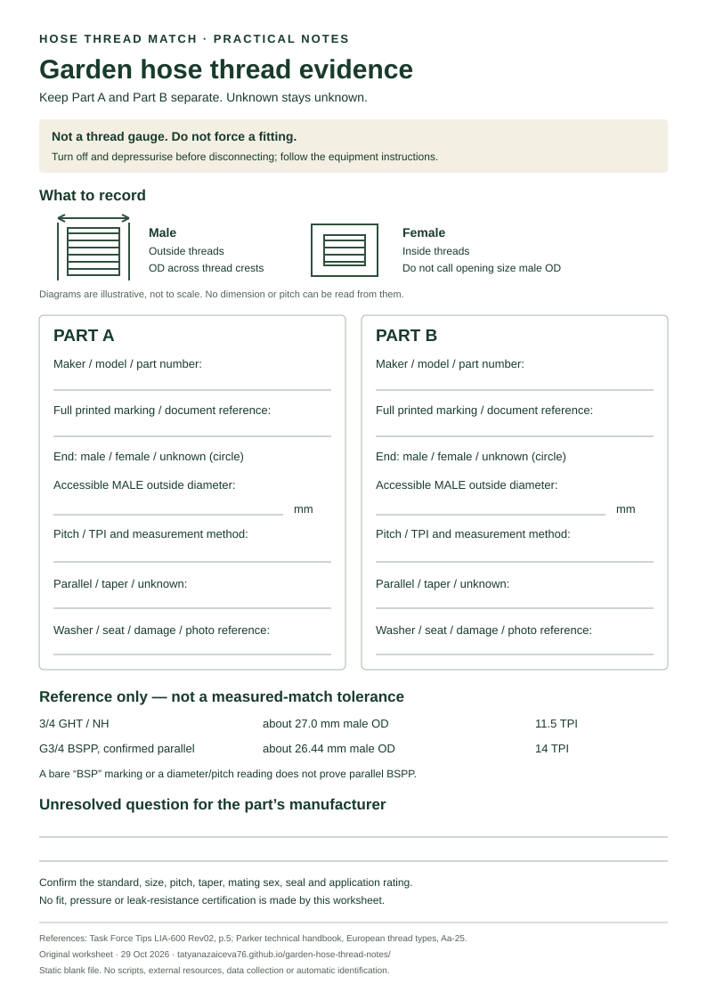

Garden hose thread size
Two fittings say “3/4”.
That does not make them a match.
3/4 GHT and parallel G3/4 BSPP are different thread systems. Use the comparison below, then keep the markings and measurements of both parts on one printable worksheet.
Do not force a fitting. A near-matching diameter is not identification. An unmarked end remains unknown until its maker or suitable thread-identification equipment establishes the specification.

The number is nominal. The thread details matter.
| Confirmed marking | Male outside diameter | Threads per inch |
|---|---|---|
| 3/4 GHT / NH | About 27.0 mm 1.062 in in the TFT chart | 11.5 TPI |
| G3/4 BSPP, parallel | About 26.44 mm | 14 TPI |
These are reference values, not pass/fail tolerances. Thread wear, measurement error and different thread or sealing forms can defeat an identification based on a ruler alone. The outside diameter is measured across an accessible male thread; a hose bore or a female opening is not the same measurement.
Task Force Tips, page 5 supplies the GHT reference. The Parker handbook’s European thread tables explain why thread dimensions and sealing geometry must be considered separately.
Make a useful record before ordering an adapter.
The worksheet is a note-taking aid, not a printed thread gauge. It leaves room for two separate parts, rather than turning one uncertain measurement into an adapter recommendation.
- Start safely. Turn off and depressurise the water supply before disconnecting a fitting. Follow the equipment maker’s instructions; do not dismantle a pressurised connection.
- Copy the actual marking. Record the model and the complete thread wording from each part or its documentation. If all you have is “3/4”, write exactly that and mark the family unknown.
- Describe the end. Outside threads are male; inside threads are female. Keep this separate from the thread family. Record any washer or seating description without assuming a seal is compatible.
- Record evidence, not a guess. Note an accessible male outside diameter, the pitch or TPI from a suitable gauge, and the method used. Leave unavailable values blank. Do not measure a female opening and label it male outside diameter.
- Keep the uncertainties. A bare “BSP” label or a roughly 26.5 mm, 14-TPI measurement does not prove parallel BSPP. Tapered threads, NPT and quick-connect interfaces are outside this guide’s match check.
Open the downloaded SVG in a browser or compatible viewer and use that viewer’s normal print command. It is laid out as one A4 page. Its illustrations are deliberately not to scale; changing print scale does not turn them into measuring tools.

Original worksheet. Print and fill locally; nothing is sent to this site.
Use confirmed markings for the next step.
When both threaded ends have confirmed markings, our existing local-only checker can describe the mating thread family and male/female wording an adapter would need. It stops on unknown or conflicting inputs. It does not certify a product’s pressure rating, seal design or leak resistance.
Open the marked-fitting checker →
If a marking is missing, keep the worksheet and ask the relevant manufacturer to identify that exact model or part. Do not buy from a “looks about right” match.
Common sticking points
Does “3/4 inch” mean a 19.05 mm thread outside diameter?
Not for the two thread designations in the table. A nominal thread size is not a direct outside-diameter measurement. Keep hose bore size, nominal thread wording and measured male outside diameter as three separate facts.
Can GHT and BSPP be screwed directly together?
Do not treat them as a direct match: the listed pitches differ. Any adapter must have the correct thread standard and mating sex at each end, plus the correct seal and application ratings. This page does not select or approve a particular adapter.
Can the worksheet identify an unmarked fitting?
No. It organises the evidence needed for an identification. Measurements alone may still leave the standard, taper or sealing system unresolved. “Unknown” is an acceptable result.
Will the download collect my notes?
No. The SVG is a static blank document with no scripts, external resources or form submission. Fill it on paper or locally in a compatible editor. This page has no analytics or input fields.
Sources & scope
Task Force Tips adapter catalogue, page 5: GHT dimensions and the need for both diameter and pitch. Parker technical handbook, European thread types, Aa-25: BSP reference dimensions and separate sealing forms.
Independent educational material, not manufacturer certification. No affiliation with the cited manufacturers. This is for recording garden-fitting evidence, not instructions for fire-service, hydraulic, gas, potable-water certification or other safety-critical connections. Follow the actual equipment documentation.